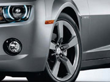
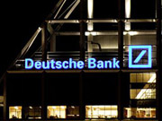
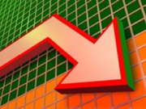

Останні новини
| Купівля : | 27.37 |
| Продаж : | 28.34 |
| Купівля : | 29.87 |
| Продаж : | 30.56 |
Обнародован рейтинг самых популярных автомобильных марок по версии поисковика Google. Как свидетельствуют данные исследования компании Quickco, лидером прошлого года стала Toyota. Этот автомобильный бренд оказался на первом месте в 74-х странах мира и, в частности, в Австралии, США, Китае, Центральной Африке, Гренландии и других. Второе место заняла BMW, которая оказалась наиболее популярной в Германии, Польше, Бельгии, Хорватии, Австрии, Норвегии и Украине. На третьем месте разместилась Hyundai, которую чаще других спрашивали жители Индии и России.
Крупнейший немецкий банк Deutsche Bank планирует сократить штат сотрудников в своих торговых подразделениях. Как сообщает агентство Bloomberg со ссылкой на знакомый с ситуацией источник, банк сократит число сотрудников в отделе по торговле акциями примерно на 17%, а в подразделении по торговле долговыми бумагами – примерно на 6%. Сотрудники будут уведомлены о сокращениях в ближайшее время, добавил источник. Источник отметил, что планируемые увольнения связаны с негативными финансовыми показателями банка по итогам 2016 года. Чистый убыток Deutsche Bank по итогам 2016 года снизился в пять раз по сравнению с предыдущим годом, составив 1,356 млрд евро. При этом выручка сократилась на 10% – до 30,014 млрд евро, передает «Прайм».
Производитель микропроцессоров Advanced Micro Devices (AMD) завершил год с убытками, однако их размер существенно снизился благодаря высокому спросу на графические решения для игровых консолей и стабилизации компьютерного рынка. За весь прошлый год компания выручила $4,27 млрд против $4 млрд в 2015 году. Чистый убыток снизился с $660 млн до $497 млн. В октябре-декабре 2016 года подразделение AMD Computing and Graphics, отвечающее за выпуск компьютерных процессоров и графических чипов, зафиксировало выручку на уровне $600 млн, что на 28% больше показателя годичной давности. Этот подъём обеспечили сильные продажи GPU. При этом подразделение получило операционный убыток в размере $21 млн, но в четвёртой четверти 2015 года он был выше — $99 млн.
Президент Петр Порошенко призвал Европарламент поддержать предложение Еврокомиссии относительно предоставления Украине автономных торговых преференций. Об этом шла речь во время телефонного разговора Порошенко с президентом Европарламента Антонио Таяни, сообщает пресс-служба главы государства. Президент поздравил Таяни с избранием на должность и выразил надежду на продолжение решительной поддержки со стороны Европарламента Украины в вопросе восстановления территориальной целостности и углубления отношений с Евросоюзом.
Украина заняла 131 место в рейтинге «Индекса восприятия коррупции». Соответствующий ежегодный рейтинг опубликовала международная неправительственная организация Transparency International (TI) на своем сайте.Согласно сообщению TI в мире растет уровень коррупции.«Результаты этого года еще больше подтвердили связь между коррупцией и неравенством, которые подпитывают друг друга, чтобы создать порочный круг между коррупцией, неравное распределение власти в обществе, и неравномерное распределение богатства», – говорится в сообщении организации. Следовательно, из 176 стран в списке Transparency International, 131 место, кроме Украины, заняла также Россия, Казахстан, Иран и Непал.
Специализированная антикоррупционная прокуратура подала повторный иск в суд, чтобы забрать в государственную собственность Запорожский титано-магниевый комбинат. Об этом заявил руководитель САП Назар Холодницкий, информирует “Радіо Свобода”. В иске говорится о расторжении договора учреждения общества с ограниченной ответственностью “Запорожский титано-магниевый комбинат” и возвращении комбината полностью в сферу государственного управления за невыполнение инвестором (компанией с орбиты олигарха Дмитрия Фирташа) взятых на себя обязательств.